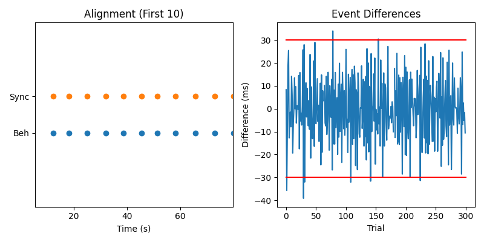

Note
Click here to download the full example code
Find Photodiode On and Off Events¶
In this example, we use pd-parser to find photodiode events and
align both the onset of the deflection and the cessation to
to behavior.
# Authors: Alex Rockhill <aprockhill@mailbox.org>
#
# License: BSD (3-clause)
Simulate data and use it to make a raw object:
We’ll make an mne.io.Raw object so that we can save out some random data with a photodiode event channel in it in fif format (a commonly used electrophysiology data format).
import os.path as op
import numpy as np
import mne
from mne.utils import _TempDir
import pd_parser
from pd_parser.parse_pd import _to_tsv, _load_pd_data
import matplotlib.pyplot as plt
import matplotlib.cm as cm
out_dir = _TempDir()
# simulate photodiode data
np.random.seed(29)
n_events = 300
# let's make our photodiode events on random uniform from 0.5 to 1 second
n_secs_on = np.random.random(n_events) * 0.5 + 0.5
prop_corrupted = 0.01
raw, beh_df, events, corrupted_indices = \
pd_parser.simulate_pd_data(n_events=n_events, n_secs_on=n_secs_on,
prop_corrupted=prop_corrupted)
# make fake electrophysiology data
info = mne.create_info(['ch1', 'ch2', 'ch3'], raw.info['sfreq'],
['seeg'] * 3)
raw2 = mne.io.RawArray(np.random.random((3, raw.times.size)) * 1e-6, info)
raw2.info['lowpass'] = raw.info['lowpass'] # these must match to combine
raw.add_channels([raw2])
# bids needs these data fields
raw.info['dig'] = None
raw.info['line_freq'] = 60
# save to disk as required by ``pd-parser``
fname = op.join(out_dir, 'sub-1_task-mytask_raw.fif')
raw.save(fname)
# add some offsets to the behavior so it's a bit more realistic
offsets = np.random.randn(n_events) * 0.01
beh_df['time'] = np.array(beh_df['time']) + offsets
behf = op.join(out_dir, 'sub-1_task-mytask_beh.tsv')
_to_tsv(behf, beh_df)
Out:
Creating RawArray with float64 data, n_channels=1, n_times=2044106
Range : 0 ... 2044105 = 0.000 ... 2044.105 secs
Ready.
Creating RawArray with float64 data, n_channels=3, n_times=2044106
Range : 0 ... 2044105 = 0.000 ... 2044.105 secs
Ready.
Writing /private/var/folders/s4/y1vlkn8d70jfw7s8s03m9p540000gn/T/tmp_mne_tempdir_lgnan_rl/sub-1_task-mytask_raw.fif
Closing /private/var/folders/s4/y1vlkn8d70jfw7s8s03m9p540000gn/T/tmp_mne_tempdir_lgnan_rl/sub-1_task-mytask_raw.fif [done]
Find the photodiode events relative to the behavioral timing of interest:
This function will use the default parameters to find and align the photodiode events, excluding events that were off. One percent of the 300 events (3) were corrupted as shown in the plots and some were too far off from large offsets that we’re going to exclude them.
pd_parser.parse_pd(fname, pd_event_name='Stim On', behf=behf,
pd_ch_names=['pd'], beh_col='time',
max_len=1.5) # none are on longer than 1.5 seconds
- 

Out:
Reading in /var/folders/s4/y1vlkn8d70jfw7s8s03m9p540000gn/T/tmp_mne_tempdir_lgnan_rl/sub-1_task-mytask_raw.fif
Opening raw data file /var/folders/s4/y1vlkn8d70jfw7s8s03m9p540000gn/T/tmp_mne_tempdir_lgnan_rl/sub-1_task-mytask_raw.fif...
Isotrak not found
Range : 0 ... 2044105 = 0.000 ... 2044.105 secs
Ready.
Reading 0 ... 2044105 = 0.000 ... 2044.105 secs...
Finding photodiode events
0%| | 0/10920 [00:00<?, ?it/s]
4%|4 | 457/10920 [00:00<00:02, 4561.92it/s]
8%|8 | 886/10920 [00:00<00:02, 4475.90it/s]
12%|#2 | 1343/10920 [00:00<00:02, 4503.53it/s]
16%|#6 | 1801/10920 [00:00<00:02, 4523.75it/s]
21%|## | 2252/10920 [00:00<00:01, 4517.47it/s]
25%|##4 | 2686/10920 [00:00<00:01, 4460.66it/s]
29%|##8 | 3134/10920 [00:00<00:01, 4464.16it/s]
33%|###2 | 3592/10920 [00:00<00:01, 4495.65it/s]
37%|###7 | 4048/10920 [00:00<00:01, 4512.65it/s]
41%|####1 | 4497/10920 [00:01<00:01, 4505.05it/s]
45%|####5 | 4950/10920 [00:01<00:01, 4509.86it/s]
50%|####9 | 5406/10920 [00:01<00:01, 4523.52it/s]
54%|#####3 | 5853/10920 [00:01<00:01, 4498.01it/s]
58%|#####7 | 6311/10920 [00:01<00:01, 4520.17it/s]
62%|######1 | 6761/10920 [00:01<00:00, 4472.11it/s]
66%|######5 | 7207/10920 [00:01<00:00, 4463.14it/s]
70%|####### | 7659/10920 [00:01<00:00, 4479.21it/s]
74%|#######4 | 8110/10920 [00:01<00:00, 4485.76it/s]
78%|#######8 | 8565/10920 [00:01<00:00, 4503.08it/s]
83%|########2 | 9019/10920 [00:02<00:00, 4511.82it/s]
87%|########6 | 9470/10920 [00:02<00:00, 4506.24it/s]
91%|######### | 9927/10920 [00:02<00:00, 4524.42it/s]
95%|#########5| 10388/10920 [00:02<00:00, 4546.94it/s]
99%|#########9| 10843/10920 [00:02<00:00, 4528.10it/s]
100%|##########| 10920/10920 [00:02<00:00, 4499.69it/s]
297 up-deflection photodiode candidate events found
Checking best behavior-photodiode difference alignments
0%| | 0/299 [00:00<?, ?it/s]
1%|1 | 4/299 [00:00<00:07, 38.07it/s]
4%|4 | 12/299 [00:00<00:06, 42.67it/s]
6%|6 | 18/299 [00:00<00:06, 45.18it/s]
8%|7 | 23/299 [00:00<00:06, 45.01it/s]
10%|# | 30/299 [00:00<00:05, 46.99it/s]
12%|#1 | 35/299 [00:00<00:05, 47.37it/s]
13%|#3 | 40/299 [00:00<00:06, 42.00it/s]
15%|#5 | 45/299 [00:01<00:06, 39.32it/s]
16%|#6 | 49/299 [00:01<00:06, 37.63it/s]
18%|#8 | 55/299 [00:01<00:05, 41.42it/s]
20%|## | 60/299 [00:01<00:06, 39.23it/s]
22%|##1 | 65/299 [00:01<00:06, 36.23it/s]
23%|##3 | 69/299 [00:01<00:07, 32.19it/s]
24%|##4 | 73/299 [00:01<00:07, 31.95it/s]
26%|##5 | 77/299 [00:01<00:07, 31.33it/s]
27%|##7 | 81/299 [00:02<00:06, 32.22it/s]
28%|##8 | 85/299 [00:02<00:06, 32.39it/s]
30%|### | 90/299 [00:02<00:06, 34.14it/s]
32%|###1 | 95/299 [00:02<00:05, 34.99it/s]
33%|###3 | 99/299 [00:02<00:05, 33.93it/s]
35%|###4 | 104/299 [00:02<00:05, 37.02it/s]
36%|###6 | 108/299 [00:02<00:05, 34.34it/s]
37%|###7 | 112/299 [00:02<00:05, 32.54it/s]
39%|###8 | 116/299 [00:03<00:05, 33.94it/s]
40%|#### | 120/299 [00:03<00:05, 33.89it/s]
41%|####1 | 124/299 [00:03<00:05, 34.71it/s]
43%|####2 | 128/299 [00:03<00:05, 33.20it/s]
44%|####4 | 132/299 [00:03<00:04, 34.83it/s]
45%|####5 | 136/299 [00:03<00:05, 32.00it/s]
47%|####6 | 140/299 [00:03<00:04, 32.22it/s]
48%|####8 | 144/299 [00:03<00:04, 31.24it/s]
50%|####9 | 149/299 [00:04<00:04, 33.38it/s]
51%|#####1 | 153/299 [00:04<00:04, 34.85it/s]
53%|#####2 | 157/299 [00:04<00:04, 34.40it/s]
54%|#####3 | 161/299 [00:04<00:04, 33.63it/s]
56%|#####5 | 166/299 [00:04<00:03, 35.78it/s]
57%|#####6 | 170/299 [00:04<00:03, 36.67it/s]
58%|#####8 | 174/299 [00:04<00:03, 34.07it/s]
60%|#####9 | 178/299 [00:04<00:03, 32.49it/s]
61%|###### | 182/299 [00:05<00:03, 33.70it/s]
63%|######2 | 187/299 [00:05<00:03, 37.11it/s]
64%|######3 | 191/299 [00:05<00:03, 35.49it/s]
65%|######5 | 195/299 [00:05<00:02, 35.39it/s]
67%|######6 | 200/299 [00:05<00:02, 37.48it/s]
68%|######8 | 204/299 [00:05<00:02, 38.07it/s]
70%|####### | 210/299 [00:05<00:02, 40.74it/s]
72%|#######1 | 215/299 [00:05<00:02, 39.79it/s]
74%|#######3 | 220/299 [00:05<00:02, 37.05it/s]
75%|#######4 | 224/299 [00:06<00:01, 37.51it/s]
77%|#######6 | 229/299 [00:06<00:01, 38.32it/s]
78%|#######8 | 234/299 [00:06<00:01, 40.12it/s]
80%|#######9 | 239/299 [00:06<00:01, 38.08it/s]
81%|########1 | 243/299 [00:06<00:01, 37.81it/s]
83%|########2 | 248/299 [00:06<00:01, 38.87it/s]
84%|########4 | 252/299 [00:06<00:01, 38.50it/s]
87%|########6 | 259/299 [00:06<00:00, 42.67it/s]
88%|########8 | 264/299 [00:07<00:00, 43.50it/s]
90%|########9 | 269/299 [00:07<00:00, 41.69it/s]
92%|#########1| 274/299 [00:07<00:00, 39.94it/s]
93%|#########3| 279/299 [00:07<00:00, 40.90it/s]
95%|#########5| 285/299 [00:07<00:00, 43.46it/s]
97%|#########6| 290/299 [00:07<00:00, 44.46it/s]
99%|#########8| 295/299 [00:07<00:00, 45.88it/s]
100%|##########| 299/299 [00:07<00:00, 38.24it/s]
Best alignment with the photodiode shifted 12 ms relative to the first behavior event
errors: min -42, q1 -8, med -1, q3 9, max 75
Excluding events that have zero close events or more than one photodiode event within `max_len` time
Excluding event 9, no event found
Excluding event 27, no event found
Excluding event 37, off by 35 ms
Excluding event 115, off by -34 ms
Excluding event 116, off by 32 ms
Excluding event 143, off by -31 ms
Excluding event 153, off by -40 ms
Excluding event 154, off by 40 ms
Excluding event 167, off by -42 ms
Excluding event 235, no event found
/Users/alexrockhill/projects/pd-parser/pd_parser/parse_pd.py:364: UserWarning: Matplotlib is currently using agg, which is a non-GUI backend, so cannot show the figure.
fig.show()
/Users/alexrockhill/projects/pd-parser/pd_parser/parse_pd.py:371: UserWarning: Matplotlib is currently using agg, which is a non-GUI backend, so cannot show the figure.
fig.show()
Find cessations of the photodiode deflections
Another piece of information in the photodiode channel is the cessation of the events. Let’s find those and add them to the events.
pd_parser.add_pd_off_events(fname, off_event_name='Stim Off')
Out:
Reading in /var/folders/s4/y1vlkn8d70jfw7s8s03m9p540000gn/T/tmp_mne_tempdir_lgnan_rl/sub-1_task-mytask_raw.fif
Opening raw data file /var/folders/s4/y1vlkn8d70jfw7s8s03m9p540000gn/T/tmp_mne_tempdir_lgnan_rl/sub-1_task-mytask_raw.fif...
Isotrak not found
Range : 0 ... 2044105 = 0.000 ... 2044.105 secs
Ready.
Reading 0 ... 2044105 = 0.000 ... 2044.105 secs...
Check recovered event lengths and compare to the simulation ground truth
Let’s load in the on and off events and plot their difference compared to
the n_secs_on event lengths we used to simulate.
The plot below show the differences between the simulated
deflection event lengths on the x axis scattered against the
recovered event lengths on the y axis. The identity line (the line with 1:1
correspondance) is not shown as it would occlude the plotted data; the
the lengths are recovered within 1 millisecond. Note that the colors are
arbitrary and are only used to increase contrast and ease of visualization.
annot, pd_ch_names, beh_df = _load_pd_data(fname)
raw.set_annotations(annot)
events, event_id = mne.events_from_annotations(raw)
on_events = events[events[:, 2] == event_id['Stim On']]
off_events = events[events[:, 2] == event_id['Stim Off']]
recovered = (off_events[:, 0] - on_events[:, 0]) / raw.info['sfreq']
not_corrupted = [s != 'n/a' for s in beh_df['pd_sample']]
ground_truth_not_corrupted = n_secs_on[not_corrupted]
fig, ax = plt.subplots()
ax.scatter(ground_truth_not_corrupted, recovered,
s=1, color=cm.rainbow(np.linspace(0, 1, len(recovered))))
ax.set_title('Photodiode offset eventfidelity of recovery')
ax.set_xlabel('ground truth duration (s)')
ax.set_ylabel('recovered duration (s)')
print('Mean difference in the recovered from simulated length is {:.3f} '
'milliseconds'.format(
1000 * abs(ground_truth_not_corrupted - recovered).mean()))

Out:
Used Annotations descriptions: ['Stim Off', 'Stim On']
Mean difference in the recovered from simulated length is 0.254 milliseconds
Total running time of the script: ( 0 minutes 14.849 seconds)